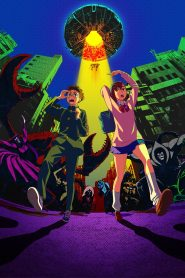

2024
Esta é uma história sobre Momo, uma garota do ensino médio que vem de uma família de médiuns espirituais, e seu colega de classe Okarun, um garoto fanático pelo ocultismo. Depois que Momo resgata Okarun de uns valentões, eles começam a conversar… No entanto, surge uma discussão entre eles, já que Momo acredita em fantasmas, mas nega a existência de alienígenas, e Okarun acredita em alienígenas, mas nega a existência de fantasmas. Visando provar que o que acreditam é real, Momo vai a um hospital abandonado onde um OVNI foi avistado e Okarun vai a um túnel que dizem ser assombrado. Para surpresa deles, cada um se depara com atividades paranormais avassaladoras que transcendem a compreensão. Em meio a isso tudo, Momo desperta seu poder oculto e Okarun ganha o poder de uma maldição para superar esses novos perigos! Será que o amor deles destinado também começa aqui!?